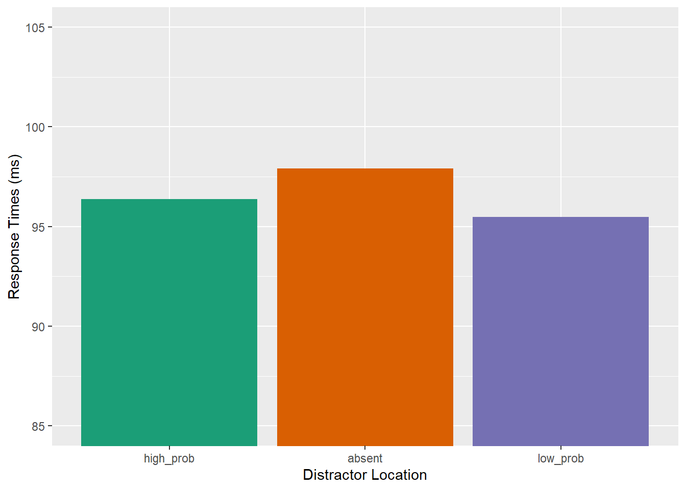

Portfolio 9
3.21.2023
The goal of this portfolio is to examine part of my thesis data. To recap, my thesis is examining distractor suppression in children and adults. Participants are shown a distractor in a location more frequently than other locations in a visual search array. Based on previous studies, we would expect adults to suppress their attention to the high-probability location, but we were unsure when in development children develop this ability.
library(tidyverse)
library(tidyr)
library(rstatix)
library(data.table)
library(afex)
library(emmeans)
library(psych)
library(ggprism)
library(patchwork)
library(magrittr)
library(cowplot)I put all the messy loading in of different data sets and adding in important columns to an R script instead of having it here.
Trim the Data
Define trimming criteria according to Van Selst and Jolicoeur 1994.
xsize <- c(4, 5, 6, 7, 8, 9, 10, 11, 12, 13, 14, 15, 20,
25, 30, 35, 50, 100)
stds <- c(1.458, 1.68, 1.841, 1.961, 2.05, 2.12, 2.173,
2.22, 2.246, 2.274, 2.31, 2.326, 2.391, 2.41, 2.4305,
2.45, 2.48, 2.5)Trim the data and compute the percent trimmed
trimmedA <- adults[adults$acc==1, ] %>% group_by(id, relative_hp_dist) %>%
mutate(sdc = ifelse(length(rt)>=100,2.5,approx(xsize,stds,xout=length(rt))$y), avg = mean(rt), stdev = sd(rt)) %>%
filter(rt <= sdc*stdev+avg & rt >=avg-(sdc*stdev) & rt >=200 & rt<=2500) %>% #exact upper limit =2464.175
select(id, age, relative_hp_dist, rt, block_num) %>% #keep these columns in the new data frame
as.data.frame()
statPrep <- trimmedA %>% group_by(id, relative_hp_dist) %>% summarise(measurement=mean(rt)) %>% as.data.frame()## `summarise()` has grouped output by 'id'. You can override using the `.groups`
## argument.100-(nrow(trimmedA)/nrow(adults[adults$acc==1, ]))*100## [1] 5.1007565.10% of trials were trimmed from the adult data set.
trimmedC12 <- kids12[kids12$acc==1, ] %>% group_by(id, relative_hp_dist) %>%
mutate(sdc = ifelse(length(rt)>=100,2.5,approx(xsize,stds,xout=length(rt))$y), avg = mean(rt), stdev = sd(rt)) %>%
filter(rt <= sdc*stdev+avg & rt >=avg-(sdc*stdev) & rt >=200 & rt<=7590) %>% #exact upper limit =7586.794
select(id, age1, relative_hp_dist, rt, block_num1) %>% #keep these columns in the new data frame
as.data.frame()
statPrep <- trimmedC12 %>% group_by(id, relative_hp_dist) %>% summarise(measurement=mean(rt)) %>% as.data.frame()## `summarise()` has grouped output by 'id'. You can override using the `.groups`
## argument.100-(nrow(trimmedC12)/nrow(kids12[kids12$acc==1, ]))*100## [1] 4.6397384.64% of trials were trimmed from the older child data set.
trimmedC6 <- kids6[kids6$acc==1, ] %>% group_by(id, relative_hp_dist) %>%
mutate(sdc = ifelse(length(rt)>=100,2.5,approx(xsize,stds,xout=length(rt))$y), avg = mean(rt), stdev = sd(rt)) %>%
filter(rt <= sdc*stdev+avg & rt >=avg-(sdc*stdev) & rt >=200 & rt<=18950) %>% #exact upper limit =18929.79
select(id, age2, relative_hp_dist, rt, block_num2) %>% #keep these columns in the new data frame
as.data.frame()
statPrep <- trimmedC6 %>% group_by(id, relative_hp_dist) %>% summarise(measurement=mean(rt)) %>% as.data.frame()## `summarise()` has grouped output by 'id'. You can override using the `.groups`
## argument.100-(nrow(trimmedC6)/nrow(kids6[kids6$acc==1, ]))*100## [1] 6.0747666.07% of trials were trimmed from the younger child data set.
trimmedC12<- trimmedC12 %>%
rename(
block_num=block_num1,
age=age1
)
trimmedC6<- trimmedC6 %>%
rename(
block_num=block_num2,
age=age2
)
kids12<- kids12 %>%
rename(
block_num=block_num1,
age=age1
)
kids6<- kids6 %>%
rename(
block_num=block_num2,
age=age2
)acc_data <- rbind(adults, kids12)
all_data <- rbind(trimmedA, trimmedC12)Examine Accuracy Effects
acc_data<- acc_data%>%
filter(id != 26)
acc_data<-acc_data%>%
mutate(acc=acc*100)distacc <- acc_data %>%
group_by(age,relative_hp_dist) %>%
summarize(accuracy = mean(acc),
sd_rt=sd(acc),
n_rt=32,
se=sd_rt/sqrt(n_rt),
upper_limit=accuracy+se,
lower_limit=accuracy-se
)## `summarise()` has grouped output by 'age'. You can override using the `.groups`
## argument.space <- acc_data %>%
group_by(age, id, relative_hp_dist) %>%
summarize(acc = mean(acc)
)## `summarise()` has grouped output by 'age', 'id'. You can override using the
## `.groups` argument.space_anova <- setDT(space)
space_anova <- dcast(space_anova,id+age~relative_hp_dist,value.var='acc')
space_anova <- space_anova %>%
mutate(low_prob = (lp_1+lp_2+lp_3)/3)
df_mod <- subset(space_anova, select=c(id, age, high_prob, absent, low_prob))
df_mod <- reshape2::melt(df_mod, id.var=c('id', 'age'), variable.name= "relative_hp_dist")ggplot(df_mod, aes(relative_hp_dist, value, fill=relative_hp_dist)) +
geom_bar(stat="summary", position="dodge") +
facet_grid(.~age) +
xlab("Distractor Location") + ylab("Accuracy (%)") +
scale_fill_brewer(palette="Dark2") +
theme(legend.position="none")+
coord_cartesian(ylim = c(85,105))## No summary function supplied, defaulting to `mean_se()`
## No summary function supplied, defaulting to `mean_se()`
Run the 3x2 ANOVA on accuracy data.
model3 <- aov_car(value ~ age*relative_hp_dist + Error(id/relative_hp_dist), data=df_mod)## Converting to factor: age## Contrasts set to contr.sum for the following variables: agemodel3## Anova Table (Type 3 tests)
##
## Response: value
## Effect df MSE F ges p.value
## 1 age 1, 30 46.83 9.42 ** .206 .005
## 2 relative_hp_dist 1.64, 49.07 6.12 5.42 * .031 .011
## 3 age:relative_hp_dist 1.64, 49.07 6.12 0.46 .003 .596
## ---
## Signif. codes: 0 '***' 0.001 '**' 0.01 '*' 0.05 '+' 0.1 ' ' 1
##
## Sphericity correction method: GGMain effect of age is significant – Main effect of distractor location is significant – interaction is not significant.
Since the interaction was not significant, we’ll exclude age and test the distractor location effect on accuracy across the 5 conditions.
model4 <- aov_car(acc ~ relative_hp_dist + Error(id/relative_hp_dist), data=acc_data)## Warning: More than one observation per design cell, aggregating data using `fun_aggregate = mean`.
## To turn off this warning, pass `fun_aggregate = mean` explicitly.model4## Anova Table (Type 3 tests)
##
## Response: acc
## Effect df MSE F ges p.value
## 1 relative_hp_dist 2.37, 73.41 25.99 3.03 * .032 .046
## ---
## Signif. codes: 0 '***' 0.001 '**' 0.01 '*' 0.05 '+' 0.1 ' ' 1
##
## Sphericity correction method: GGAccuracy is different across all locations.
ggplot(acc_data, aes(relative_hp_dist, acc, fill=relative_hp_dist)) +
geom_bar(stat="summary", position="dodge") +
facet_grid(.~age) +
xlab("Distractor Location") + ylab("Response Times (ms)") +
scale_fill_brewer(palette="Dark2") +
theme(legend.position="none")+
coord_cartesian(ylim = c(85,105))## No summary function supplied, defaulting to `mean_se()`
## No summary function supplied, defaulting to `mean_se()`
For the 3 locations (HP, LP, and absent), run t-tests.
space_anova %>%
t.test(x=space_anova$low_prob, y=space_anova$high_prob, alternative="less", mu=0,paired = TRUE, conf.level = .95) ##
## Paired t-test
##
## data: space_anova$low_prob and space_anova$high_prob
## t = -1.7892, df = 31, p-value = 0.04168
## alternative hypothesis: true mean difference is less than 0
## 95 percent confidence interval:
## -Inf -0.04780453
## sample estimates:
## mean difference
## -0.9128781space_anova%>%
t.test(x=space_anova$high_prob, y=space_anova$absent, alternative="less", mu=0, paired =TRUE, conf.level = .95) ##
## Paired t-test
##
## data: space_anova$high_prob and space_anova$absent
## t = -3.2767, df = 31, p-value = 0.001295
## alternative hypothesis: true mean difference is less than 0
## 95 percent confidence interval:
## -Inf -0.7384317
## sample estimates:
## mean difference
## -1.530258space_anova%>%
t.test(x=space_anova$low_prob, y=space_anova$absent, alternative="less", mu=0, paired =TRUE, conf.level = .95)##
## Paired t-test
##
## data: space_anova$low_prob and space_anova$absent
## t = -3.6668, df = 31, p-value = 0.0004568
## alternative hypothesis: true mean difference is less than 0
## 95 percent confidence interval:
## -Inf -1.313422
## sample estimates:
## mean difference
## -2.443136ggplot(df_mod, aes(relative_hp_dist, value, fill=relative_hp_dist)) +
geom_bar(stat="summary", position="dodge") +
xlab("Distractor Location") + ylab("Response Times (ms)") +
scale_fill_brewer(palette="Dark2") +
theme(legend.position="none")+
coord_cartesian(ylim = c(85,105))## No summary function supplied, defaulting to `mean_se()`
spaceT <- acc_data %>%
group_by(age, id, relative_target) %>%
summarize(acc = mean(acc)
)## `summarise()` has grouped output by 'age', 'id'. You can override using the
## `.groups` argument.space_anovaT <- setDT(spaceT)
space_anovaT <- dcast(space_anovaT,id+age~relative_target,value.var='acc')
space_anovaT <- space_anovaT %>%
mutate(low_prob = (lp_1+lp_2+lp_3)/3)
df_mod_targ <- subset(space_anovaT, select=c(id, age, high_prob, low_prob))
df_mod_targ <- reshape2::melt(df_mod_targ, id.var=c('id', 'age'), variable.name= "relative_target")ggplot(df_mod_targ, aes(relative_target, value, fill=relative_target)) +
geom_bar(stat="summary", position="dodge") +
facet_grid(.~age) +
xlab("Distractor Location") + ylab("Accuracy (%)") +
scale_fill_brewer(palette="Dark2") +
theme(legend.position="none")+
coord_cartesian(ylim = c(85,105))## No summary function supplied, defaulting to `mean_se()`
## No summary function supplied, defaulting to `mean_se()`
Run the 3x2 ANOVA on accuracy data.
model3 <- aov_car(value ~ age*relative_target + Error(id/relative_target), data=df_mod_targ)## Converting to factor: age## Contrasts set to contr.sum for the following variables: agemodel3## Anova Table (Type 3 tests)
##
## Response: value
## Effect df MSE F ges p.value
## 1 age 1, 30 28.93 7.92 ** .194 .009
## 2 relative_target 1, 30 2.80 0.28 <.001 .603
## 3 age:relative_target 1, 30 2.80 0.66 .002 .422
## ---
## Signif. codes: 0 '***' 0.001 '**' 0.01 '*' 0.05 '+' 0.1 ' ' 1For target location accuracy, there is only a main effect of age.